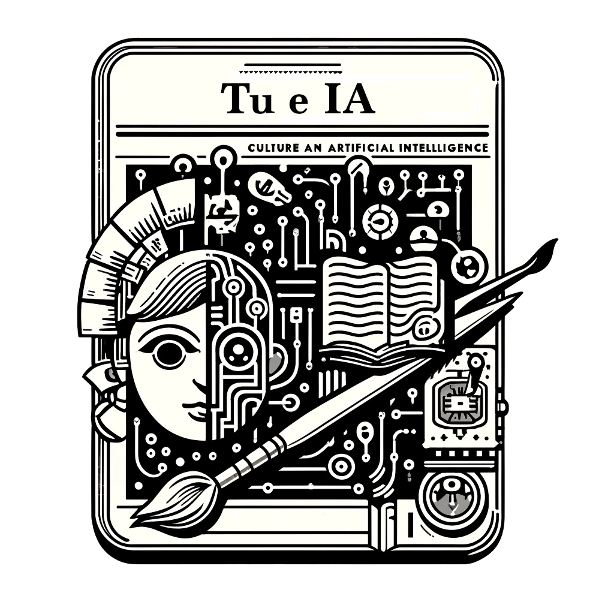

Luca Mari - Chatting with an AI...
Raccolgo e metto a disposizione qui un po' di materiali a proposito di quello che sta succedendo intorno a ChatGPT e i suoi fratelli, dunque ai cosiddetti sistemi di intelligenza artificiale generativa ("GenAI") e in particolare ai chatbot, con i quali possiamo interagire atraverso conversazioni nelle nostre lingue storico-naturali, come l'italiano e l'inglese.

Date le tante attività che stiamo facendo per la disseminazione culturale sull'intelligenza artificiale generativa, abbiamo attivato una mailing list, a cui ci si può iscrivere per ricevere aggiornamenti su ciò che produciamo, notizie su eventi a cui interverremo, indicazioni di contenuti che riteniamo interessante proporre. Le comunicazioni saranno inviate senza alcuna periodicità.
Per iscriversi alla mailing list.
A partire dalle conoscenze ed esperienze che già avevo a proposito di intelligenza artificiale, questi materiali sono stati prodotti dalla fine del 2022, grazie all'opportunità di lavorare con sistemi di GenAI, di riflettere su quello che sta succedendo con l'ampia diffusione questi sistemi, e di condividere pubblicamente queste riflessioni in eventi pubblici a cui ho partecipato come relatore.
In termini generali, il mio parere attuale è che i sistemi di GenAI, e i chatbot in particolare, abbiano caratteristiche, attuali e potenziali, rivoluzionarie, e questo non perché siano in grado di presentare informazione enciclopedica (cosa a cui grazie a Google, Wikipedia, ecc. siamo ormai abituati), ma perché mostrano di poter argomentare in modo molto più sofisticato (di molti esseri umani e) di quanto finora siamo stati abituati nella nostra interazione con sistemi tecnologici. E argomentare in modo efficace e contestuale è una capacità intellettuale che non siamo abituati a vedere in entità che non siano esseri umani.
Questo è un elenco di "principi" per un uso appropriato di un chatbot ed esempi di indicazioni operative, che ho scritto in questi mesi, e che potrebbero essere utili per chi voglia usare un chatbot in modo efficace e responsabile.
In questi mesi la quantità di articoli e testi vari pubblicati a proposito di GenAI è cresciuta enormemente. Questa pagina contiene il riferimento ad alcune letture che mi sembrano di particolare interesse.

In febbraio 2024 è stato pubblicato il libro "L'Intelligenza Artificiale di Dostoevskij", che raccoglie e presenta in modo organico un po' delle esperienze e delle riflessioni che ho fatto in questi mesi a proposito di GenAI, e "futuro, conoscenza, e responsabilità umana", come dichiara il sottotitolo (il libro si apre con Imparare (a imparare) con i chatbot: una lettera che un docente universitario ha indirizzato agli studenti di un suo corso prima dell’inizio delle lezioni). È il risultato della collaborazione con tanti colleghe/i e amiche/i, e in particolare Daniele Bellasio, Francesco Bertolotti, Alessandro Giordani. Grazie a ognuna/o!
È stato pubblicato, per gli abbonati del Sole 24 Ore, il podcast in cinque puntate Tu e IA, idee e protagonisti dell'intelligenza artificiale realizzato con Daniele Bellasio.
Un aggiornamento sul contenuto di queste pagine (settembre 2024): nuovi materiali in tutte le sezioni, in particolare i notebook Python nella sezione Attività.
Dialoghi
Questi sono dialoghi, non editati, con chatbots diversi da ChatGPT, realizzati nel 2024.
A proposito di...
Questi sono dialoghi, non editati, con ChatGPT, realizzati nel 2024.
A proposito di...
Questi sono dialoghi, non editati, con ChatGPT, realizzati nel 2023.
A proposito di...
- capacità linguistiche elementari e di capacità di identificare e correggere errori
- creazione e uso di linguaggi, tra linguaggio e metalinguaggio, sintassi e semantica
- capacità aritmetiche e linguistiche in ambito matematico
- conoscenza e di capacità di valutare l'affidabilità della conoscenza
- scambiabilità di ruoli, in cui io cerco di rispondere alle sue domande
- dimostrare comprensione organizzando i contenuti
- traduzioni, ambiguità, ...
- personalità multiple, attuate (GPT-4)
- problem solving, apprendimento, e creatività (GPT-4)
- chatbot e loro affidabilità (GPT-4)
- nuovi concetti matematici e loro uso (GPT-4)
- capacità linguistiche, di concettualizzazione, ecc. (GPT-4)
- uso degli LLM nell'ingegneria (GPT-4)
- elaborazione dei contenuti di un documento tecnico (GPT-4)
- scambiabilità di ruoli, in cui io cerco di rispondere alle sue domande (GPT-4)
- proprietà intellettuale (GPT-4)
- lavoro agile (GPT4 e alcuni plugin)
Questi sono dialoghi, non editati, tra personaggi tutti impersonati da ChatGPT (dunque, in un certo senso, dei dialoghi di ChatGPT con se stesso), realizzati nel 2023, con GPT-4.
Un dialogo tra...
- Newton e Einstein
- Giulio Cesare e Vercingetorige
- un atomo di radio e un atomo di idrogeno
- uno scafista e un bambino
- Anna Frank e una SS
- seno e coseno
- la virgola e il due punti
- due alberi che riflettono sul cambiamento climatico
Questi sono altri, primi dialoghi, sempre non editati, realizzati in dicembre 2022.
A proposito di...
- Natural Language Processing e del suo ruolo sociale, naturalmente...
- frazioni, errori, ed educazione
- filosofia, errori, e pensiero
- teorie complottistiche, terrapiattismo, e psicologia
- problem solving, apprendimento, e creatività
- leggi fisiche, fantasie, e immaginazione
- programmazione funzionale, errori, e necessità
- controfattuali, causalità, e specificità
- statistica, domande, e lessico
- metafisica dei numeri, argomenti persuasivi, convenzioni
- condizioni delle conversazioni, naturalmente...
Articoli
Nella prospettiva della disseminazione culturale, prima ancora che tecnologica, insieme con alcuni colleghi in questi mesi ho scritto vari articoli di introduzione sulla GenAI, pubblicati in contesti diversi.
Sole 24 Ore (anche in una pagina del sito dell'Università Cattaneo):
- 16 maggio 2023, Intelligenza artificiale, perché fare previsioni questa volta è più difficile
- 20 maggio 2023, «Chatbot, che ore sono?», conoscere l'AI con una domanda e tre risposte
- 1 giugno 2023, ChatGPT: uno strumento, un collega, o un consulente?
- 19 giugno 2023, Che cos'è un bug? Così Dostoevskij ci aiuta a rispondere e a capire ChatGPT
- 28 giugno 2023, ChatGPT e il superamento della distinzione tra cultura “umanistica” e “tecnico-scientifica”
- 24 luglio 2023, ChatGPT e gli agenti: una nuova frontiera per l'intelligenza artificiale
- 7 ottobre 2023, GenAI: come sta cambiando il software development
- 11 dicembre 2023, Perché le intelligenze artificiali possono diventare adulte, ma non responsabili
- 11 gennaio 2024, ChatGPT e il copyright: una sfida (non solo) per il giornalismo
- 13 febbraio 2024, L'intelligenza artificiale di Dostoevskij: perché la riconoscibilità dei testi generati da IA è un problema (non) importante
- 19 febbraio 2024, Sora, l'intelligenza artificiale e una nuova sfida (video) per l'informazione
- 16 marzo 2024, Intelligenza artificiale, che cosa c’è dietro la causa di Elon Musk contro OpenAI
- 20 marzo 2024, L'intelligenza artificiale di Platone, un dialogo (preprint di un articolo pubblicato sullo "Speciale del Sole 24 Ore: Intelligenze Artificiali: Le nuove frontiere per professioni, aziende, mercati")
- 9 aprile 2024, Intelligenza artificiale: la voce come copia e l'avvertimento di Platone
- 6 maggio 2024, Sistemi chiusi vs sistemi aperti: l'alternativa nella GenAI e nei chatbot
- 2 luglio 2024, ChatGPT e il jailbreaking: quando i chatbot superano le barriere di sicurezza
- 19 luglio 2024, Chatbot: tra errori e utilità, un'analisi della loro natura
- 10 settembre 2024, L'uso di chatbot come tutor: un'opportunità per migliorare l'apprendimento degli studenti
- 16 settembre 2024, ChatGPT: il ragionamento complesso dei nuovi chatbot
- 3 ottobre 2024, Llama 3.1 405B: Analisi dettagliata del modello linguistico di Meta
- 8 ottobre 2024, Hopfield e Hinton: il Nobel che unisce fisica e intelligenza artificiale
- 23 ottobre 2024, Modelli linguistici: oltre la semplice previsione di parole
- 25 ottobre 2024, L'intelligenza artificiale ci sta rendendo stupidi?
Varese Focus:
- maggio 2023, E' l'inizio di un nuovo mondo
- luglio 2023, Viaggio nel pensiero umano con ChatGPT
- settembre 2023, Cosa può fare ChatGPT per un'azienda
- ottobre 2023, Intelligenza Artificiale e responsabilità umane
- dicembre 2023, L'Intelligenza Artificiale e la questione morale
- febbraio 2024, ChatGPT un anno dopo
- giugno 2024, Speciale AI: un numero monografico
AI4Business:
- 16 giugno 2023, ChatGPT sa scrivere di tante cose ma non le ha mai viste
- 5 settembre 2023, LLM, come istruirli a rispondere su nuovi documenti
- 3 luglio 2024, Tool per la generazione di software, cosa possono fare realmente
Tutto_Misure:
- giugno 2023, In dialogo con un agente artificiale a proposito di qualche argomento di metrologia
- settembre 2023, Una breve introduzione ai sistemi di intelligenza artificiale nella prospettiva della metrologia
- maggio 2024, Un'analisi preliminare della metrologia dell'intelligenza artificiale
Questa è stata una prima riflessione sull'esperienza di uso di ChatGPT, scritta durante le vacanze di Natale del 2022, e questo è un articolo giornalistico che ne è stato tratto.
Con ChatGPT abbiamo scritto una proposta di legge per regolare lo sviluppo dei sistemi di IA, e questo è un articolo di Wired che presenta e commenta l'esperienza.
Questa è una lunga intervista di introduzione a tanti aspetti dei sistemi di intelligenza artificiale generativa che mi ha fatto la Gazzetta di Mantova, a seguito di un seminario che avevo tenuto per un gruppo di scuole di Mantova.
Questo è un articolo di commento a un dialogo fatto nel contesto in un convegno di AUSED, pubblicato dalla rivista ZeroUno.
Media: video, audio, ...
Il video, in inglese, del webinar Chatbots: facing a cultural revolution and trying to understand it, tenuto il 12 settembre 2023 all'Università della California, Berkeley
La registrazione della puntata del 12 maggio 2023 di Macro, del Sole 24 Ore, dedicata a Il lavoro dell'intelligenza artificiale, a cui ho partecipato (il mio intervento comincia al minuto 25:30).
L'intervista Intelligenza artificiale: responsabilità dello scienziato o dell'utente? che mi ha fatto di Vittorio Carlini del Sole 24 Ore, pubblicata il 14 novembre 2023
La registrazione della tavola rotonda su L'Intelligenza Artificiale Generativa nel mondo del lavoro, tenuta il 23 gennaio 2024 al Parlamento Europeo, a cui ho partecipato (il mio intervento comincia al minuto 41:40).
La registrazione della puntata del 2 febbraio 2024 di Macro, del Sole 24 Ore, dedicata alla presentazione del libro L'intelligenza artificiale di Dostoevskij.
La registrazione audio della puntata dell'8 febbraio 2024 di Melog, di Radio 24, dedicata al commento al libro L'intelligenza artificiale di Dostoevskij.
Il video di un webinar del 15 febbraio 2024 dedicato alla presentazione del libro L'intelligenza artificiale di Dostoevskij.
L'intervista dedicata alla presentazione del libro L'intelligenza artificiale di Dostoevskij per la rivista SmartMarketing.
La pagina di presentazione del podcast Tu e IA, idee e protagonisti dell'intelligenza artificiale realizzato con Daniele Bellasio per il Sole 24 Ore.
La registrazione della puntata del 22 marzo 2024 di PdM Talk, dell'Editrice ESTE, dedicata a Intelligenza artificiale, il futuro che ci A(I)spetta, a cui ho partecipato.
La registrazione di un seminario tenuto l'8 aprile 2024 al Circolo Culturale Pro Desio, prima parte e seconda parte.
La registrazione di un dialogo tenuto il 15 aprile 2024 al Politecnico di Milano, EduCafé, sul libro L'intelligenza artificiale di Dostoevskij.
L'episodio Intelligenza Artificiale, Turing Test, Responsabilità del podcast di Dario Zanca.
Il video di una breve lezione, Noi e l'intelligenza artificiale: un'introduzione per la serie LIUC per la Maturità.
La registrazione audio della puntata del 13 settembre 2024 del podcast Macro, di Radio 24, su Che cosa vuol dire che l'intelligenza artificiale diventa dottoranda.
La registrazione audio di una puntata speciale, live dal Mudec il 30 settembre 2024, del podcast L'altro Zio Sam, di Radio 24, su La scelta di diventare grandi.
Slide
In questi mesi ho ricevuto numerosi inviti a parlare di quello che sta succedendo con ChatGPT e i suoi fratelli, che ho generalmente accettato con piacere, riconoscendo l'importanza, in questo momento storico, di fornire informazione e proporre interpretazioni su quello che sta succedendo. Forse con un po' di retorica, ho considerato accettare questi inviti come un mio dovere civico. Ho così tenuto seminari, webinar, e corsi per aziende, scuole, associazioni culturali e professionali, ...
Qualche esempio di slide di presentazioni tenute in questi mesi:
- seminario / webinar "Chatting with an AI... Exploring cognitive aspects of conversational AI", tenuto in marzo 2023 per Reply
- corso "In dialogo con un'intelligenza artificiale: un'esplorazione", tenuto in marzo 2023 per docenti di scuola: prima, seconda, terza, e quarta parte
- seminario "In dialogo con l'Intelligenza Artificiale: esplorando nuove frontiere per insegnare e imparare", ripetuto in vari Laboratori Territoriali per l'Occupabilità
- seminario "Intelligenza artificiale: per renderci persone migliori o persone inutili?", ripetuto in varie scuole per studenti, e seminario "In dialogo con un'intelligenza artificiale: scoprire per capire, capire per decidere", ripetuto in varie scuole per docenti
- intervento "Introduzione agli aspetti cognitivi e tecnici dei Large Language Models", tenuto in luglio 2023 per l'Ordine degli Avvocati di Milano
- intervento "In dialogo con un'intelligenza artificiale: scoprire per capire", tenuto in settembre 2023 per CNA Ferrara
- seminario "Come l'intelligenza artificiale e ChatGPT cambiano il giornalismo e il mondo del lavoro", tenuto in settembre 2023 per AssoRolandi Vigevano
- seminario "In dialogo con l'intelligenza artificiale - Qualche riflessione per la società di oggi e di domani", tenuto in ottobre 2023 per Rotary Legnano
- seminario per la Scuola di Formazione Sociopolitica, Gazzada, tenuto in ottobre 2023
- seminario per Confindustria Varese, Gruppi merceologici, tenuto in ottobre e novembre 2023
- focus group con un gruppo di docenti dell'ITE Tosi, Busto Arsizio: primo incontro, secondo incontro, terzo incontro, quarto incontro
- seminario per il Centro Culturale, Biassono, tenuto in gennaio 2024
- seminario per Lions, Busto Arsizio, tenuto in gennaio 2024
- seminario per Associazione Mazziniana, Varese, tenuto in febbraio 2024
- seminari per studenti del liceo Vittorio Veneto di Milano: "In dialogo con un'Intelligenza Artificiale: verso una nuova società? verso una nuova etica?" e "Intelligenza artificiale: come funziona?", tenuti in febbraio 2024
- focus group con un gruppo di docenti presso l'IIS Dalla Chiesa, Sesto Calende: primo incontro, secondo incontro, terzo incontro, quarto incontro
- intervento alla Scuola di Formazione Centrale, "Intelligenza Artificiale: come cambia la percezione della realtà. La società e i lavori del futuro, l'educazione alla responsabilità", Ancona, luglio 2024
- Intervento per Camera di Commercio di Varese, settembre 2024
- Intervento per Confindustria Como, ottobre 2024
- percorso per ITET Daverio, Varese, ottobre 2024
- Polo Onlife
Storie
Fra i tanti modi con cui ci si può avvicinare alla GenAI, anche lo story telling potrebbe avere un senso. Ecco alcune storie che ho scritto in questi mesi:
Attività
La GenAI ci sta prospettando scenari (cognitivi, psicologici, ...; insomma: culturali) talmente nuovi che, oltre che leggere e riflettere al proposito, è una buona idea anche sperimentare. Anche se sono ormai disponibili numerosi strumenti per applicazioni specifiche (questo è l'esempio di un elenco), sono convinto che l'interazione con un chatbot sia il miglior punto di partenza.
Qualche suggerimento al riguardo (informazione aggiornata a febbraio 2024), ipotizzando che l'interazione si realizzi con un browser web, dunque con solo un dispositivo connesso a internet e senza dover scaricare nessuna applicazione specifica sul proprio PC (per qualche chatbot sono anche disponibili app per Android e IOS):
- ChatGPT di OpenAI: accessibile in una versione a pagamento (GPT-4) e in una gratuita (GPT-3.5), ma comunque previa registrazione di un account OpenAI, o Google/Microsoft/Apple.
- Copilot di Microsoft: accessibile anche in modo anonimo.
- Gemini di Google: accessibile con un account Google.
- Claude di Anthropic: accessibile con un account Anthropic o Google.
- Perplexity di Perplexity: accessibile anche in modo anonimo.
- Hugging Face: non è un chatbot, ma una/la "comunità AI open", che tra l'altro rende accessibili chatbot e non solo appunto "aperti" attraverso i suoi "spaces".
Questo è un elenco di "principi" per un uso appropriato di un chatbot ed esempi di indicazioni operative, che ho scritto in questi mesi, e che mi sembra possano essere utili per chiunque voglia usare un chatbot in modo efficace e responsabile.
Infine, per chi non ha troppi problemi a toccare un po' di codice, quelli che seguono sono notebook Python, proposti con l'obiettivo di fornire un'introduzione a qualche aspetto dell'intelligenza artificiale, con l'attenzione a essere utili nell'apprendimento, non a essere computazionalmente efficienti (e per questo i dettagli dell'implementazione sono spesso lasciati "dietro le quinte", in un file *utils.py di appoggio).
- L'approssimazione di una funzione lineare mediante un singolo neurone a comportamento lineare
- Un semplice confronto tra comportamento programmato e comportamento appreso
- L'approssimazione di una funzione mediante un MLP con uno strato nascosto
- Qualche esempio di uso dei transformer
- Un'esplorazione della tokenizzazione
- Un'esplorazione del token embedding con un transformer
- Un semplice esempio di Retrieval-Augmented Generation (RAG)
- Un esempio di interazione tra agenti
- Un esempio di esecuzione automatica di funzioni da un modello linguistico locale
- Un esempio di esecuzione automatica di funzioni (per ricerca in un database locale) da un modello linguistico locale
- Un esempio di esecuzione automatica di funzioni (per ricerca nel web) da un modello linguistico locale